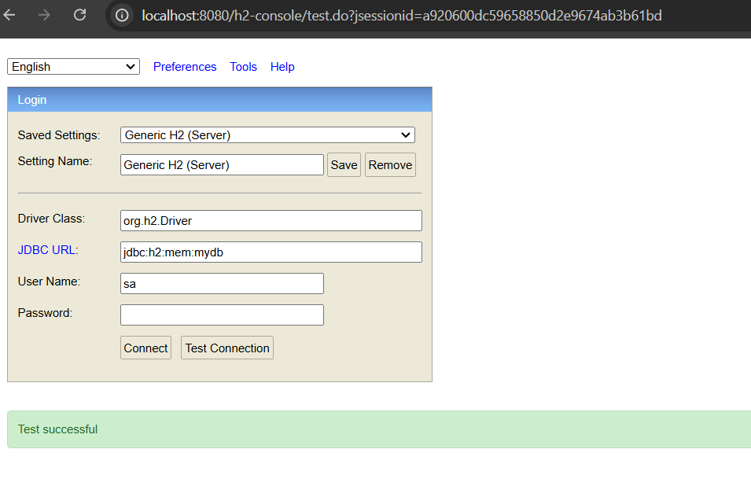

1. Configuration in application.properties
spring.h2.console.enabled=true
spring.datasource.url=jdbc:h2:mem:mydb;DB_CLOSE_DELAY=-1;DB_CLOSE_ON_EXIT=FALSE
spring.datasource.driverClassName=org.h2.Driver
spring.datasource.username=sa
spring.datasource.password=password
spring.jpa.database-platform=org.hibernate.dialect.H2Dialect2. Spring Security Configuration
If you are using Spring Security, add the configuration below. H2 uses an embedded frame, which causes 403 Forbidden errors due to CSRF protection and frame options:
import org.springframework.boot.autoconfigure.security.servlet.PathRequest;
import org.springframework.context.annotation.Bean;
import org.springframework.context.annotation.Configuration;
import org.springframework.core.Ordered;
import org.springframework.core.annotation.Order;
import org.springframework.security.config.annotation.web.builders.HttpSecurity;
import org.springframework.security.config.annotation.web.configuration.EnableWebSecurity;
import org.springframework.security.config.annotation.web.configurers.CsrfConfigurer;
import org.springframework.security.config.annotation.web.configurers.HeadersConfigurer.FrameOptionsConfig;
import org.springframework.security.web.SecurityFilterChain;
@Configuration
@EnableWebSecurity
public class H2AccessSecurityConfiguration {
@Bean
@Order(Ordered.HIGHEST_PRECEDENCE)
SecurityFilterChain h2ConsoleSecurityFilterChain(HttpSecurity http) throws Exception {
http.securityMatcher(PathRequest.toH2Console());
http.csrf(CsrfConfigurer::disable);
http.headers((headers) -> headers.frameOptions(FrameOptionsConfig::sameOrigin));
return http.build();
}
}3. Accessing the Console
Access the H2 console in your browser at:
http://localhost:8080/h2-console
In saved settings, select Generic H2 (Embedded). Ensure Driver Class, JDBC URL, Username, and Password match your application.properties values.
